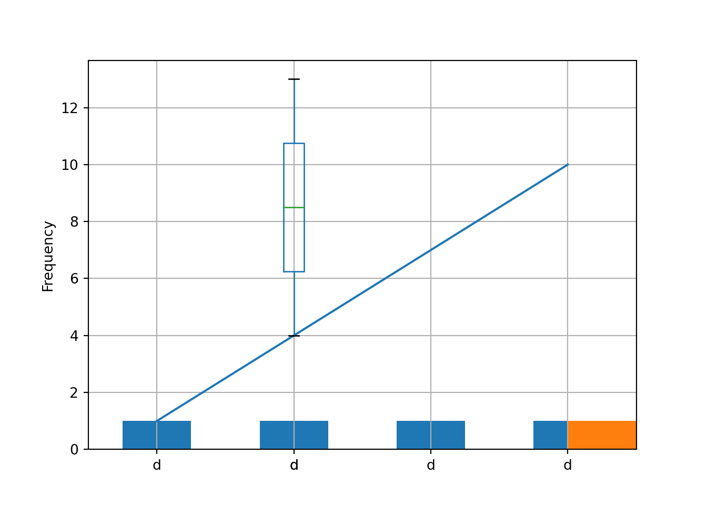
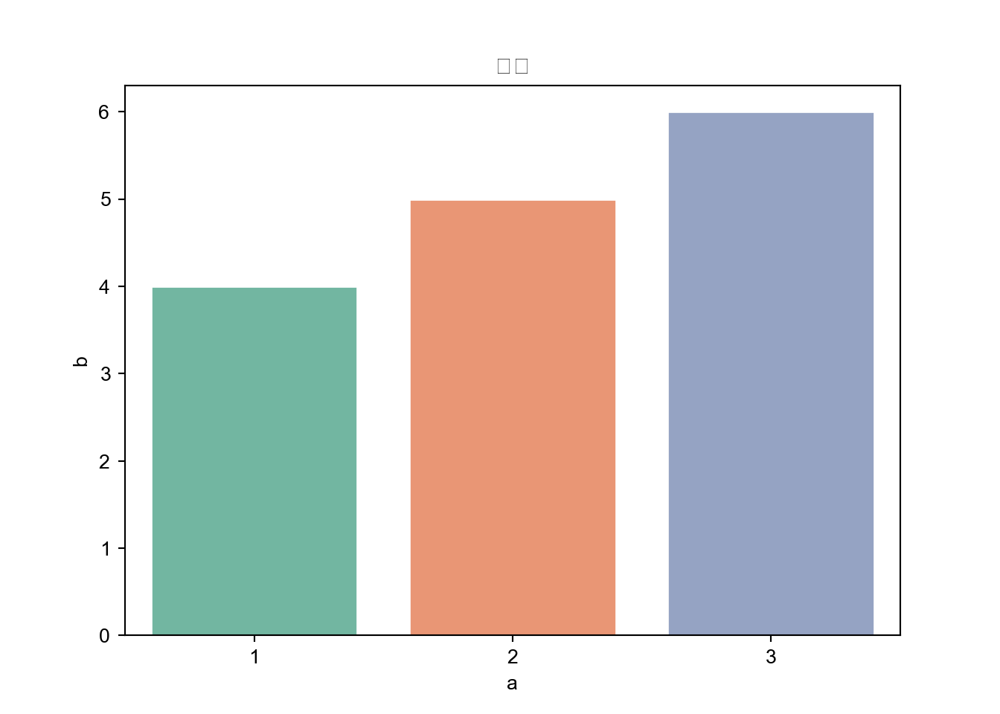

Chapter 4 Pandas 数据分析
## The Python module seaborn exists.Pandas（Python Data Analysis Library）是一个流行的Python库，用于数据处理和分析。它提供了强大且灵活的数据结构，使数据清洗、转换、分析和可视化变得更加容易。以下是Pandas库的一些关键特点：
数据结构： Pandas引入了两种主要的数据结构，即DataFrame和Series。DataFrame类似于电子表格或SQL表，Series则类似于一维数组。这些数据结构允许你存储和操作数据以及执行各种数据操作。
数据清洗和转换： Pandas提供了丰富的功能，用于数据清洗，包括处理缺失值、删除重复数据、转换数据类型、重塑数据等。这些功能有助于准备数据以进行进一步的分析。
数据索引： 每个Pandas数据结构都附带一个灵活的标签索引，允许你使用标签而不是整数位置来访问和操作数据。这样可以提高代码的可读性和可维护性。
数据分组和聚合： Pandas支持将数据按照条件分组，然后应用各种聚合函数（如求和、平均值、计数等）。这对于生成摘要统计信息非常有用。
时间序列处理： Pandas包括用于处理时间序列数据的功能，包括日期范围生成、时间索引和频率转换。
数据可视化： Pandas可以与其他库（如Matplotlib和Seaborn）集成，用于数据可视化，使你能够轻松绘制图表和图形。
数据导入和导出： Pandas支持多种数据格式，包括CSV、Excel、SQL数据库、JSON等，因此你可以方便地导入和导出数据。
Pandas是数据科学和数据分析领域的重要工具，它使研究人员和分析师能够更快速地处理和理解数据。如果你在Python中进行数据处理或数据分析工作，学习如何使用Pandas将极大地提高你的效率。
4.1 Python 读写数据
Pandas 是一个强大的 Python 数据分析库，它提供了多种方法来读取和写入不同格式的数据，包括 CSV、Excel、SQL 数据库、JSON 等。以下是一些常见的 Pandas 数据读写操作的示例：
4.1.1 读取数据
- 从 CSV 文件读取数据：
import pandas as pd
df = pd.read_csv('file.csv')
- 从 Excel 文件读取数据：
import pandas as pd
df = pd.read_excel('file.xlsx', sheet_name='Sheet1')
- 从 SQL 数据库读取数据：
import pandas as pd
import sqlite3
conn = sqlite3.connect('database.db')
query = 'SELECT * FROM table_name'
df = pd.read_sql_query(query, conn)
- 从 JSON 文件读取数据：
import pandas as pd
with open('data.json', 'r') as file:
data = json.load(file)
df = pd.DataFrame(data)
4.1.2 写入数据
- 写入数据到 CSV 文件：
df.to_csv('output.csv', index=False) # index=False 表示不写入行索引
- 写入数据到 Excel 文件：
with pd.ExcelWriter('output.xlsx') as writer:
df.to_excel(writer, sheet_name='Sheet1', index=False)
- 写入数据到 SQL 数据库：
import sqlite3
conn = sqlite3.connect('output.db')
df.to_sql('table_name', conn, if_exists='replace', index=False)
# if_exists='replace' 可以替换已存在的表，'append' 可以追加数据
- 写入数据到 JSON 文件：
df.to_json('output.json', orient='records', lines=True)
# orient='records' 表示以记录方式写入，lines=True 表示每行一个 JSON 记录
这只是 Pandas 数据读写的一些基本示例。Pandas 还支持其他数据格式的读写操作，如 Parquet、HDF5 等。根据您的需求，可以选择适当的方法和选项来读取和写入数据。
4.2 pandas 数据结构
Pandas库提供了两种主要的数据类型，用于数据处理和分析：DataFrame和Series。以下是它们的详细介绍：
- DataFrame：
DataFrame是Pandas中最重要的数据结构，类似于电子表格或SQL数据库中的表。 它是一个二维的、带标签的数据结构，其中每列可以包含不同数据类型。 通常，DataFrame用于存储和处理二维数据，其中包括表格数据，例如CSV文件、SQL查询结果等。 你可以将DataFrame视为一个多维的数据容器，它具有行索引和列标签，允许你轻松执行各种数据操作。
- Series：
Series是Pandas中的一维数据结构，类似于数组或列表。 与DataFrame不同，Series只包含一列数据，但仍带有标签索引。 Series通常用于表示一维数据集，例如时间序列数据、某个DataFrame中的一列等。 这些数据结构使Pandas成为一个强大的工具，用于数据导入、清洗、转换、分析和可视化。在DataFrame和Series中，数据通常以NumPy数组的形式存储，但附带了标签索引，这有助于更直观地访问和处理数据。这使得Pandas在数据科学和数据分析中非常有用，因为它提供了高度的灵活性和可扩展性。
4.2.1 Series 数据操作
Pandas中的Series是一维带标签的数据结构，它提供了许多功能来处理、分析和操作数据。以下是一些常见的Series数据相关操作的总结：
- 创建Series：
- 通过传递一个列表、数组或字典来创建Series。
- 设置自定义的索引标签。
import pandas as pd
import numpy as np
import matplotlib.pyplot as plt
import seaborn as sns
data = [1, 2, 3, 4, 5]
series = pd.Series(data, index=['A', 'B', 'C', 'D', 'E'])- 访问数据：
- 使用索引标签访问Series中的元素。
- 使用切片操作选择多个元素。
- 基本统计操作：
- 计算平均值、总和、最大值、最小值等。
- 计算描述性统计信息。
- 过滤和筛选：
- 使用布尔索引进行条件筛选。
- 使用.loc[]和.iloc[]进行标签和位置筛选。
- 元素运算：
- 对Series中的元素进行数学运算，如加、减、乘、除等。
- 使用NumPy函数进行运算。
- 缺失数据处理：
- 使用.isnull()和.notnull()检查缺失值。
- 使用.dropna()删除缺失值。
- 使用.fillna()填充缺失值。
- 排序：
- 使用.sort_values()按值排序。
- 使用.sort_index()按索引标签排序。
- 去重：
- 使用.unique()获取唯一值。
- 使用.duplicated()检查重复项。
- 元素计数：
使用.value_counts()计算元素的出现次数。
这些是Pandas Series中的一些常见数据操作，但Pandas还提供了许多其他功能，如合并、重塑、分组和汇总等，使数据操作变得更加强大和灵活。
4.3 创建DataFrame
import pandas as pd
df1 = pd.DataFrame({"a":[1,2,3],"b":[4,5,6],"c":[7,8,9]})
df1 # Specify values for each columns ## a b c
## 0 1 4 7
## 1 2 5 8
## 2 3 6 9df2 = pd.DataFrame([[1,2,3,4],[4,5,6,7],[7,8,9,10],[10,11,12,13]],columns=["a","b","c","d"],index=["A","B","C","D"])
df2 # Specify values for each rows## a b c d
## A 1 2 3 4
## B 4 5 6 7
## C 7 8 9 10
## D 10 11 12 134.3.1 基本数据探索
使用Pandas的head()、info()和describe()等方法，快速查看数据集的概述。
## a b c
## 0 1 4 7
## 1 2 5 8
## 2 3 6 9## <class 'pandas.core.frame.DataFrame'>
## RangeIndex: 3 entries, 0 to 2
## Data columns (total 3 columns):
## # Column Non-Null Count Dtype
## --- ------ -------------- -----
## 0 a 3 non-null int64
## 1 b 3 non-null int64
## 2 c 3 non-null int64
## dtypes: int64(3)
## memory usage: 200.0 bytes## a b c
## count 3.0 3.0 3.0
## mean 2.0 5.0 8.0
## std 1.0 1.0 1.0
## min 1.0 4.0 7.0
## 25% 1.5 4.5 7.5
## 50% 2.0 5.0 8.0
## 75% 2.5 5.5 8.5
## max 3.0 6.0 9.04.4 重塑数据
4.4.1 将列聚集成行
x = pd.melt(df2,id_vars=["a","d"],var_name="var",value_name="result")
# wide_to_long function also do this job
x## a d var result
## 0 1 4 b 2
## 1 4 7 b 5
## 2 7 10 b 8
## 3 10 13 b 11
## 4 1 4 c 3
## 5 4 7 c 6
## 6 7 10 c 9
## 7 10 13 c 124.4.3 添加行
## a b c d
## A 1 2 3 4
## B 4 5 6 7
## C 7 8 9 10
## D 10 11 12 13
## A 1 2 3 4
## B 4 5 6 7
## C 7 8 9 10
## D 10 11 12 134.5 取子集/筛选行
## a b c
## 0 1 4 7
## 1 2 5 8
## 2 3 6 9## a b c
## 0 1 4 7
## 1 2 5 8## a b c
## 2 3 6 9## a b c
## 1 2 5 8## a b c
## 0 1 4 7
## 2 3 6 9## a b c
## 0 1 4 7
## 1 2 5 8## a b c
## 2 3 6 9
## 1 2 5 8## a b c
## 0 1 4 7
## 1 2 5 8## a b c
## 0 1 4 74.6 筛选变量/筛选列
## a b
## 0 1 4
## 1 2 5
## 2 3 6## 0 1
## 1 2
## 2 3
## Name: a, dtype: int64## a b
## 0 1 4
## 1 2 5
## 2 3 6## a b
## 0 1 4
## 1 2 5## a b
## 0 1 4
## 1 2 5
## 2 3 6## a b
## 0 1 4
## 1 2 5## a c
## 0 1 74.7 数据汇总
## 1 1
## 2 1
## 3 1
## Name: a, dtype: int64## array([1, 2, 3])## 3## a b c
## count 3.0 3.0 3.0
## mean 2.0 5.0 8.0
## std 1.0 1.0 1.0
## min 1.0 4.0 7.0
## 25% 1.5 4.5 7.5
## 50% 2.0 5.0 8.0
## 75% 2.5 5.5 8.5
## max 3.0 6.0 9.0## 6other useful function
- sum
- count
- median
- quantile
- apple apply function to each object
- min
- max
- mean
- var
- std
4.10 聚合数据
iris = pd.read_csv('https://archive.ics.uci.edu/ml/machine-learning-databases/iris/iris.data',header=None)
iris## 0 1 2 3 4
## 0 5.1 3.5 1.4 0.2 Iris-setosa
## 1 4.9 3.0 1.4 0.2 Iris-setosa
## 2 4.7 3.2 1.3 0.2 Iris-setosa
## 3 4.6 3.1 1.5 0.2 Iris-setosa
## 4 5.0 3.6 1.4 0.2 Iris-setosa
## .. ... ... ... ... ...
## 145 6.7 3.0 5.2 2.3 Iris-virginica
## 146 6.3 2.5 5.0 1.9 Iris-virginica
## 147 6.5 3.0 5.2 2.0 Iris-virginica
## 148 6.2 3.4 5.4 2.3 Iris-virginica
## 149 5.9 3.0 5.1 1.8 Iris-virginica
##
## [150 rows x 5 columns]## 0 1 2 3
## 4
## Iris-setosa 250.3 170.9 73.2 12.2
## Iris-versicolor 296.8 138.5 213.0 66.3
## Iris-virginica 329.4 148.7 277.6 101.34.11 合并数据集
join data set
## 0_x 1_x 2_x 3_x 4 0_y 1_y 2_y 3_y
## 0 5.1 3.5 1.4 0.2 Iris-setosa 5.1 3.5 1.4 0.2
## 1 5.1 3.5 1.4 0.2 Iris-setosa 4.9 3.0 1.4 0.2
## 2 5.1 3.5 1.4 0.2 Iris-setosa 4.7 3.2 1.3 0.2
## 3 5.1 3.5 1.4 0.2 Iris-setosa 4.6 3.1 1.5 0.2
## 4 5.1 3.5 1.4 0.2 Iris-setosa 5.0 3.6 1.4 0.2
## ... ... ... ... ... ... ... ... ... ...
## 7495 5.9 3.0 5.1 1.8 Iris-virginica 6.7 3.0 5.2 2.3
## 7496 5.9 3.0 5.1 1.8 Iris-virginica 6.3 2.5 5.0 1.9
## 7497 5.9 3.0 5.1 1.8 Iris-virginica 6.5 3.0 5.2 2.0
## 7498 5.9 3.0 5.1 1.8 Iris-virginica 6.2 3.4 5.4 2.3
## 7499 5.9 3.0 5.1 1.8 Iris-virginica 5.9 3.0 5.1 1.8
##
## [7500 rows x 9 columns]4.12 绘图
使用Pandas的方法直接从DataFrame中创建基本可视化。
# 折线图
df2['a'].plot(kind='line')
# 条形图
df2['b'].value_counts().plot(kind='bar')
# 直方图
df2['c'].plot(kind='hist')
# 箱线图
df2.boxplot(column='d')
使用Pandas和所选的数据可视化库中的参数自定义图表。
# Matplotlib自定义
plt.title('标题')
plt.xlabel('X轴标签')
plt.ylabel('Y轴标签')
# Seaborn自定义
sns.set(style="whitegrid")
sns.barplot(x='a', y='b', data=df1, palette='Set2')